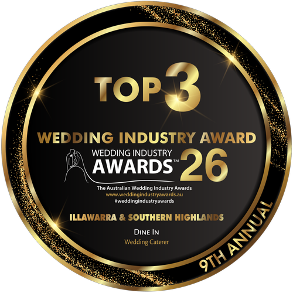
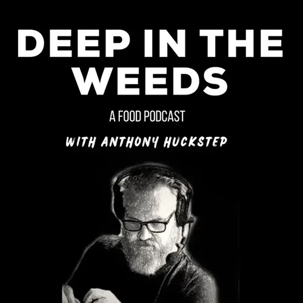

Loved by guests, recognised by the industry
5.0from 60 Google reviews
Read all reviews on GoogleLeave a review
- Top 3 Wedding Caterer 2026
- NSW Business Awards finalist
- Illawarra Local Business Awards winner
In their words
Reviews by occasion
As seen on Nine Travel
"Local chef Brooke Silk effortlessly transformed my holiday rental into a private restaurant, serving a delicious meal and leaving the kitchen spotless. A fabulous dinner party without lifting a finger!"
Awards & media
Awards

Top 3 Wedding CatererDine In proudly recognised as a Top 3 Wedding Caterer in the Illawarra & Southern Highlands at the 2026 Wedding Industry Awards.
 NSW Business Awards Finalist
NSW Business Awards FinalistDine In proudly named a finalist in the NSW Business Awards, recognised for Excellence in Small Business across the state
 Illawarra Business Award Winner
Illawarra Business Award WinnerDine In proudly recognised as a Winner in the prestigious Illawarra Local Business Awards, celebrating excellence in our local community.
In the media
 Channel 10 'Destination Desserts' Episode
Channel 10 'Destination Desserts' EpisodeFeatured on Channel 10's 'Destination Desserts

Deep In The Weeds (Podcast)Chef Brooke Silk shares her inspiring journey from fine dining to founding Dine In and Capture the Chef, highlighting how she redefined hospitality on her own terms in this nationally recognised food industry podcast.
 Sami Lukis’ Travel Article on Nine: "How did it take me so long?"
Sami Lukis’ Travel Article on Nine: "How did it take me so long?"In Sami Lukis' Nine Travel article, she discovers the hidden gem of Dine In
- Illawarra Mercury Covering World Food Championship
Chef Brooke Silk wins her second Australian dessert title with a ricotta doughnut creation, earning a spot at the World Food Championships in the US.
 Regional Illawarra Article covering Dine In
Regional Illawarra Article covering Dine InAn in-depth newspaper feature where Chef Brooke Silk shares the inspiring culinary journey behind Dine In's exquisite dining experiences.
- ABC Illawarra radio
Chef Brooke Silk discusses sustainable cooking and local produce during her 'Paddock to Plate' segment on ABC Illawarra radio.
Latest on Google
These reviews load live from Google.
Your table is the next one we set.
Every review on this page started with a single enquiry. Tell us your date and we’ll build the menu around it.
Or call Brooke on 0432 804 952